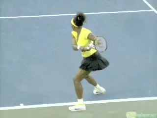
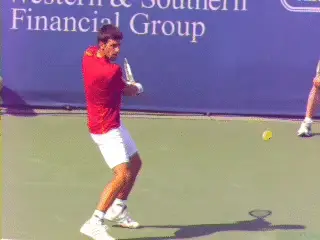
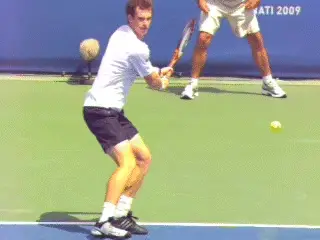

The Inside Out Backhand¶
John Sherwood¶

The inside out backhand - valuable when you are pulled wide to recover on the forehand.
In modern tennis the inside out forehand is widely understood as a foundational shot. It allows pros to hit a higher percentage off shots off their more explosive wing, and also to finish points by hitting by forehands inside in, as opposed to the riskier and usually less powerful backhand down the line. And the benefits of learning to play from the inside forehand position are usually even greater at lower levels.
But most players have never even heard the reverse term: inside out backhand. Does the inside out backhand exist? And if so, how is used?
The reality is that the inside out backhand is equally critical in developing a complete tactical game. This applies at the pro level and every other level as well.
It is rarely a weapon compared to the inside out forehand but is fundamental in three situations. These are: recovering from a wide forehand, returning in the deuce court, and attacking short mid court balls. It should be practiced regularly in all three variations to develop confidence in the same fashion as every other shot.
Recovery
When players are pulled wide to the forehand side and can't recover fully, the inside out backhand allows them to defend or counterattack, by returning on the crosscourt diagonal - the same as if they were responding with a crosscourt forehand.
Rather than get caught off balance trying to move far enough around the ball to hit a forehand, the player, as Serena shows above, has time to set up for a high-level technical backhand. Note that the shoulders are turned in the direction of the inside out shot line, and the legs are set up and coiled in Serena's preferred semi open stance.

The primary return in the deuce court is the inside out backhand.
Deuce Court Return
When the opponent serves to the backhand in the deuce court, the basic return is inside out. Yet this is rarely understood by lower-level players.
The inside out diagonal is the safest play to start the point and allows the returner to establish court position in the center of the server's attacking angles.
Returning down the line on the backhand side in the deuce court can make you instantly vulnerable to your opponent's crosscourt. A deep inside out return forces the server to respond with a rally ball or attack down the line.
Going down the line means changing the direction of the shot diagonal, and usually, hitting into a shorter court. These factors add difficulty.
Watch the key components in Novak's return. Like Serena the shoulders are turned so they are virtually parallel to the shot direction.
Watch the path of the racket head as it moves toward contact. It is perfectly aligned with the diagonal of the outgoing ball. These are powerful images for any player to model.
It may appear that the contact is \"later\" on the inside out backhand than on other backhands. In reality, the whole body is turned toward the target and the relative relationship of the contact point to the body is fundamentally similar.

The third inside out backhand is on short balls left near the center of the court.
Short Balls
The third basic use of the inside out backhand is when the opponent leaves the ball short near the center of the court. Here there are two options.
The player can hit inside out toward the forehand corner and attempt to finish the point when the court is open. The other option is to use the inside out backhand as an approach.
Unlike the return or the recovery examples above, the inside out backhand in this case is often hit with a neutral or slightly closed stance. Again, a key is aligning the body with the shot.
Watch how Andy Murray turns his shoulders to the inside out target line. The step with the front foot is along a line parallel to a line across his torso, again, the shot diagonal.
The turn and the step naturally align the racket face with the outgoing ball direction. Since the inside out backhand is not as natural or comfortable as the inside out forehand, players need to allocate specific time to practice in all 3 variations.
Practicing the inside out backhand will help you prepare for every situation that you may be presented within today's game. Matches can be won or lost on just a few key points. Sooner or later the inside out backhand will be the shot that makes the difference.
 Chatham, N.J. John played varsity Division 1
tennis at the University of Toledo and has guided
hundreds of junior players into college and the
pro ranks, including traveling extensively on the
ITF junior and WTA professional circuits. He is a
USPTA Elite Professional and a graduate of the
USTA High Performance Coaching Program. You can
contact John directly at J1Sherwood@aol.com
Chatham, N.J. John played varsity Division 1
tennis at the University of Toledo and has guided
hundreds of junior players into college and the
pro ranks, including traveling extensively on the
ITF junior and WTA professional circuits. He is a
USPTA Elite Professional and a graduate of the
USTA High Performance Coaching Program. You can
contact John directly at J1Sherwood@aol.com